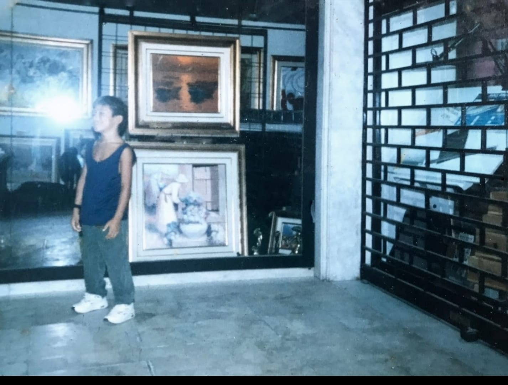
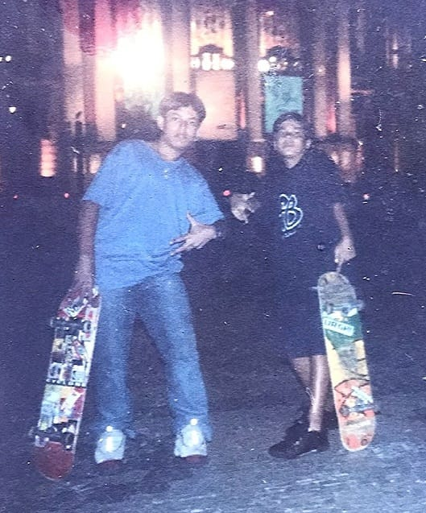
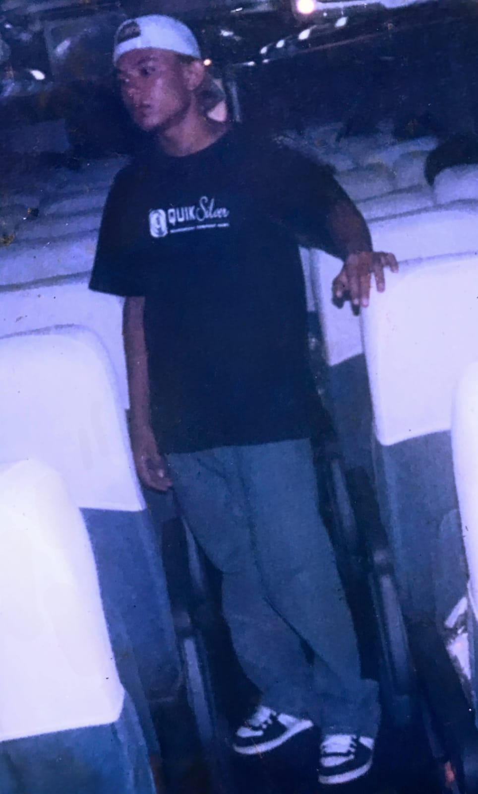
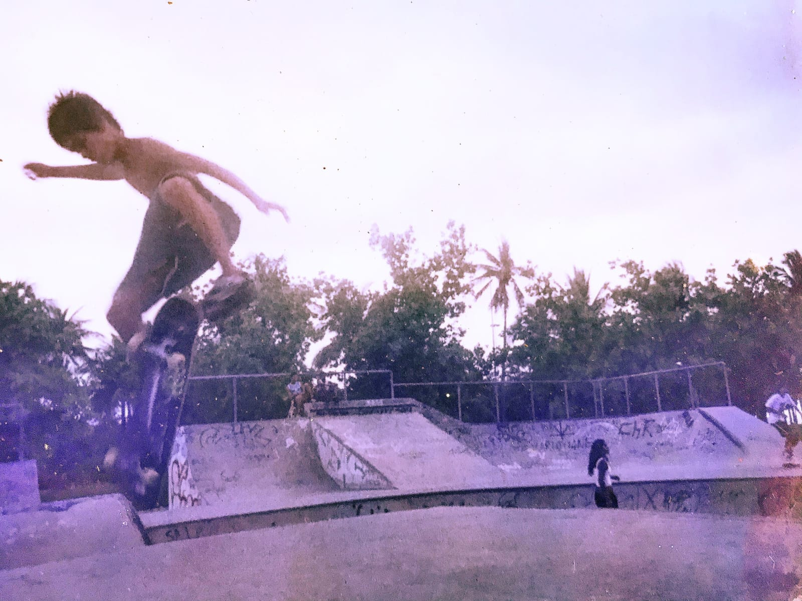
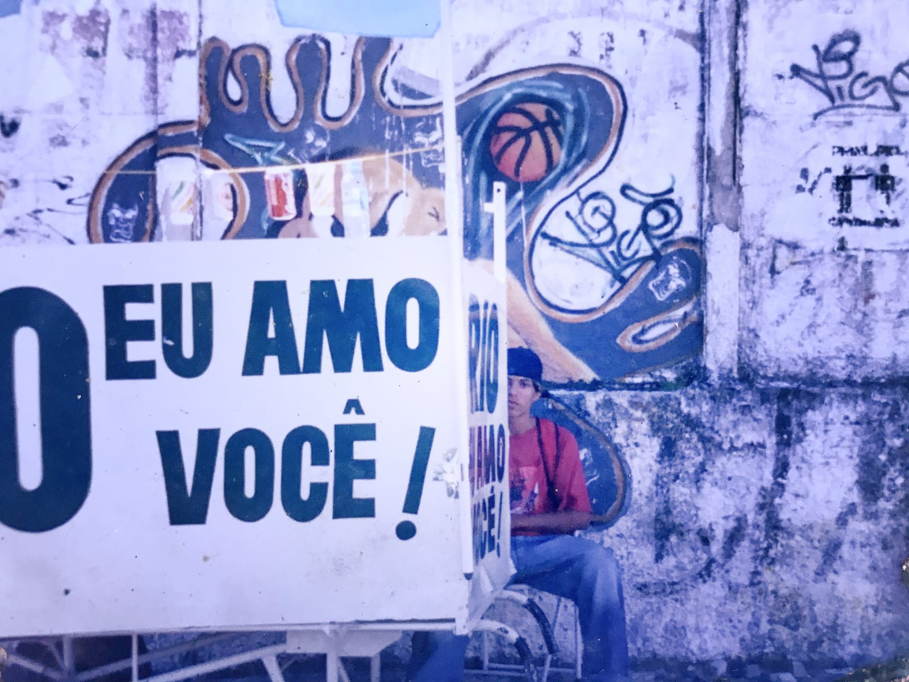
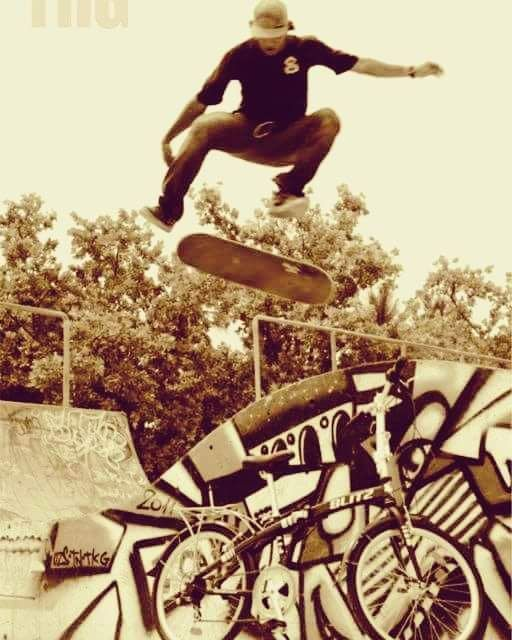
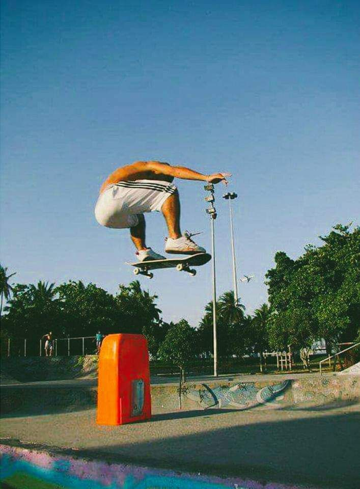

Bem-vindo ao portal oficial de Kim KS, onde a rua encontra o mar.

O Começo de Tudo

Primeiro Skate

Relacionamento

Churrasquinho

Fases da Vida

Reconhecimento

Essência do Skate
Confira o Sticker Pack Oficial da King Of Scrawl
"O rap é uma ferramenta de resistência."